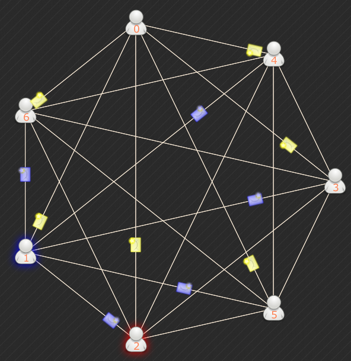
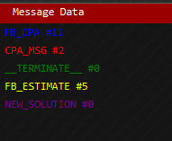

|  |
Network traffic visualization will visualize the network that the algorithm is running
upon
as can be seen in the image on the left - the network is drawn, and the messages that are transport on the network are shown color coded on the left of the visualization there is a legend for those colors.  |